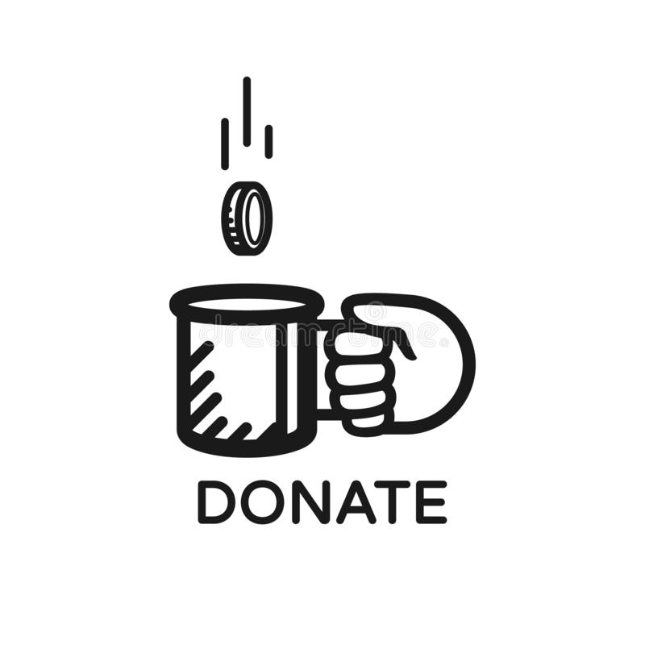

Your donation makes art possible
contour 556 in Canberra’s Art Biennial.
Your donation helps keep canberra art biennial a free event for all to enjoy.
Donations support artists directly, donations are directed towards artists fees, accommodation and travel.
Donations can be directed towards specific support for particular artists and their project.
We are developing plans for our 4th iteration in October 2022. Please respond if you would like to be added to our contact list.
Donations are tax deductible
Your donations will directly support artists, ensuring their participation in this significant international event.
Please complete the form below